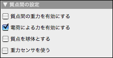
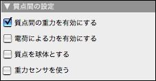
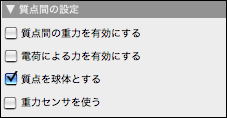
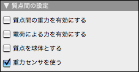

複数の粒子システム
多くの粒子の相互作用を研究することは魅力的なことです。たとえば、ビリヤードのボール、電子の集まり、あるいは、空間内のいくつかの物体などです。そのような場合、あらゆる粒子は、その他の粒子に対して力を及ぼすでしょう。これら3つのケースをここで簡単に議論します。
荷電粒子
20個の電子の相互作用を研究するとします。そこには、相互作用をする190通りの電子の組み合わせがあります。20個の帯電した自由質点を作り、190個の クーロン力を設定すればそのような粒子システムができます。しかし、 CindyLab ではより簡単にそれを作る方法があります。質点を作り、 自由質点 インスペクタで帯電させたなら、 環境設定で 電荷による力を有効にするボックスをチェックするだけです。そうすれば、すべての粒子はすぐに相互作用を始めます。
 |
| 電荷による力を有効にする |
次の図は、反射壁のかごに閉じこめられたいくつかの荷電粒子の状態を示します。速い粒子を青で、遅い粒子を赤で、中間の速度のものをその間の色で表示するために CindyScript を使いました。
 |
| 複数の荷電粒子 |
この図のために使われた CindyScript の一部を次に示します。
pts=allpoints(); f(x):=hue(max((min((0.5,x)),0.0))); forall(pts,#.color=f(#.kinetic))
重力系 n-体システム
荷電粒子のシステムとよく似たものとして、天体のように重力で引きあう粒子のシステムを考えることができます。そのためには、 環境設定 で、対応するボタンをチェックするだけです。
 |
| 質点間の重力 |
次の2つの図は、重力を受ける複数の粒子システムを示します。最初のものは、三体問題で非常に珍しい8の字型の解(最近発見されたまれな例)です。二番目の例は、5つの物体の渾沌としたシステムを示します。このシミュレーションのためには、初速を持つそれぞれの質点を描いて、 質点間の重力を有効にする ボタンをチェックするだけです。
 |  |
|
| 規則的な島 | カオス的動き |
質点を球体とする
最後に、ゼロでない直径をもつ球体をシミュレートする方法が CindyLab にあります。そのためには 質点を球体とする チェックボックスをチェックします。すると、それぞれの質点は、2つの質点間の距離がそれらの半径の和になれば衝突し反発するようになります。このアプローチが必ずしも現実的な物理モデルとはいえませんが、運動量保存則を含むモデルとしては適切でしょう。
 |
| 質点を球体とする |
次の例は、ビリヤードで大きな衝突が起きる前と、起きた直後、さらにしばらくした後のシミュレーションを示します。
 |  |  |
||
| 衝突の前 | 直後 | しばらくした後 |
以下の例は、運動量保存の法則を例証する標準的な実験を示します。ここでは、振り子の質点は固い振り子の振舞いをモデル化するため、円周上にあります。運動量がどのように赤から黄色のボールへ移されるかについて注意して見てください。力が及ぼされる半径は、質点インスペクタの半径スライダーによって調節することができます。
 |  |  |
||
| 衝突の前 | 途中 | その後 |
重力センサ（加速度センサ）
ノート型パソコンに搭載されている重力センサ（加速度センサ）を利用することができます。インスペクタの「物理全体設定」を選びます。「質点間の設定」の「重力センサを使う」ボタンをチェックします。（加速度センサを搭載していないパソコンではメニューそのものが出ません。）これによって、パソコンを動かすことで重力センサが働いて、質点などの動きをコントロールできます。
 |
| 重力センサ |
注意
複数の粒子モデルは膨大な計算時間を要するかもしれません。特に、力が反発力ではなく引力のとき、CindyLab エンジンの自動ステップ幅適用が効果を示し始めるようないくつかの状況があるかもしれません。
次もご覧ください。
Page last modified on Friday 24 of February, 2012 [12:56:31 UTC].
The original document is available at
http://doc.cinderella.de/tiki-index.php?page=Many-Particle%20SystemsJ